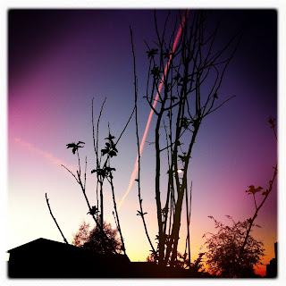

Recovered weblog entry
Sunrise contrail through the blossoming plum

Backing out of the driveway this morning, I noticed an arcing line spanning the entire sky. It started a brilliant peach near the horizon, waned red, until it settled on soft pink as it followed the gradient of the sky.
Lens: Lucifer VI
Film: Ina's 1935